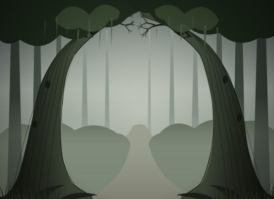
background/background_1
Two gnarled trunks arch over a misty path; mossy, cool greens; the pale opening sits behind the customer's head.
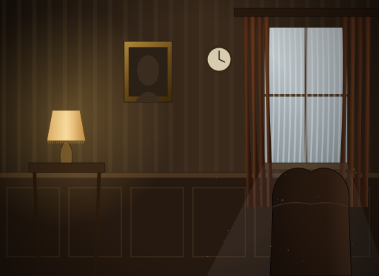
background/background_2
A dark panelled sitting room: drapes and net curtains at a grey window, a wing chair, a fringed lamp; centre kept dark.
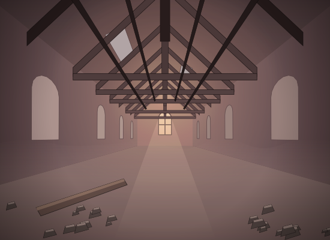
background/background_3
Under the rafters of a half-ruined church, trusses receding to a glowing arched window, rubble on the floor.
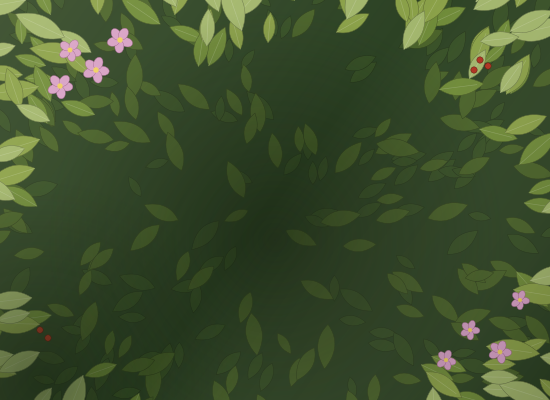
background/background_4
A wall of leaves in five greens with pale blossom and red berries at the corners; shaded in the middle.
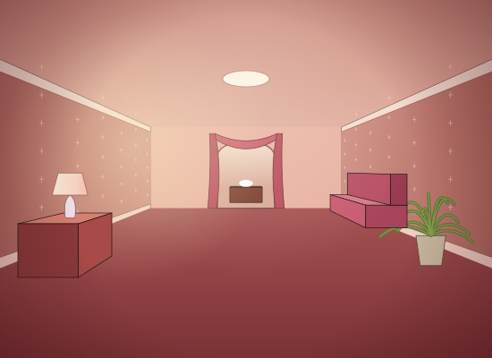
background/background_5
A pink, over-upholstered parlor: sprigged wallpaper, rose carpet, a swagged arch to a viewing room, a lamp and a fern.
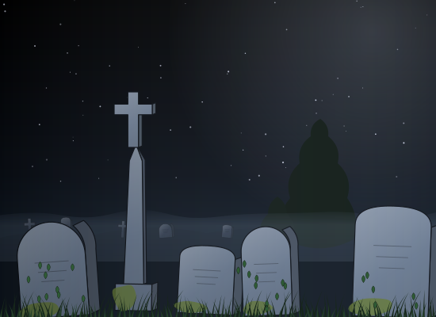
background/background_7
Moonlit crooked headstones and a tall cross under a starry black sky, ivy and grass in front; follows the original's layout.
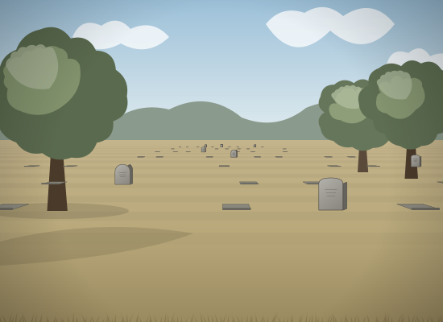
background/background_celemony
The cemetery by day: flat markers in rows on dry grass, a few upright stones, soft trees, pale sky; horizon kept where the ceremony fg expects it.
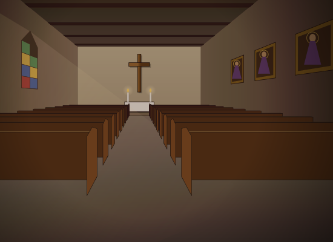
background/background_church
The nave: pews either side of the aisle, the altar and its wooden cross, stained glass at left throwing light, three saints at right.
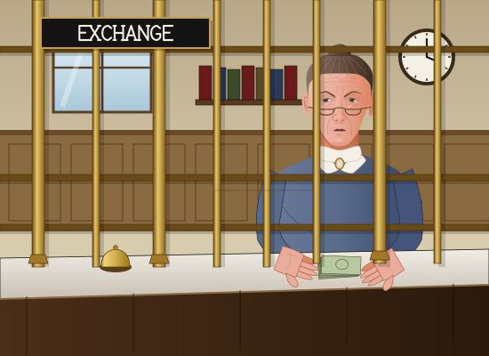
places/bank
Prudence Ledbetter (the Expanded teller) behind brass bars counting bills, the EXCHANGE plate top left as in the original, ledgers, clock and window behind. The small figure is the weakest part.
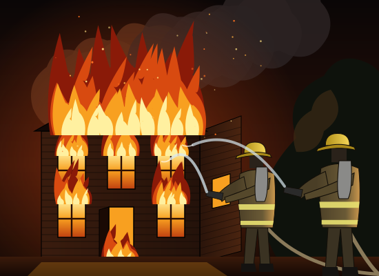
places/fire
A clapboard parlor ablaze at night, flames from every window and the roof, two firefighters rim-lit by the fire hosing it down.
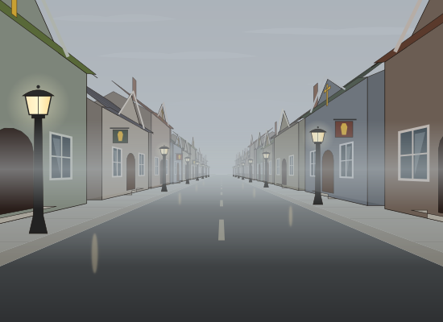
places/palors
One-point street of parlors in fog, drawn in perspective with gas lamps and gilt crosses.
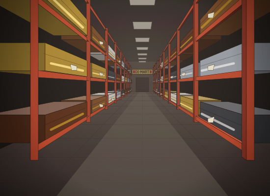
places/store
The Di-Mart casket aisle: racked caskets in six finishes on red racking, receding to the DI-MART banner; centre kept calm for the store clerk.
new
The vault: the round door swung open on its hinge, deposit boxes, gold bars and money sacks lit warm inside, riveted steel walls.
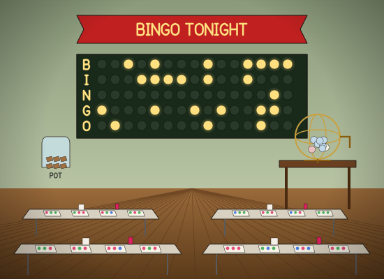
new
The church hall: BINGO TONIGHT banner, the B-I-N-G-O lamp board, the ball tumbler, folding tables with cards and daubers, the jar of wooden tags for the pot.
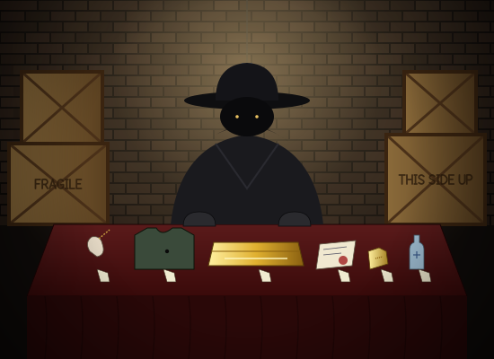
new
A faceless dealer under a bare bulb behind a red-clothed table: rabbit's foot, Kevlar vest with one hole, the gold casket off a truck, a forged permit, a filed gold tag, tap holy water; crates.
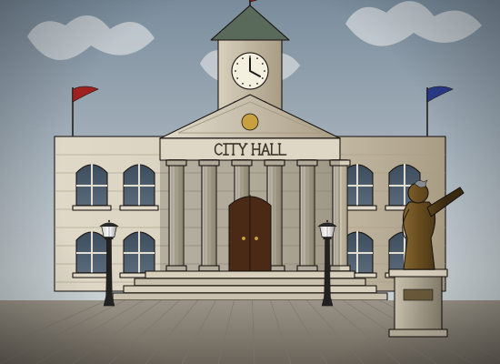
new
A pompous little classical hall: clock tower, pediment and CITY HALL frieze, fluted columns, flags, and the Mayor's bronze statue pointing at something important, with a pigeon.
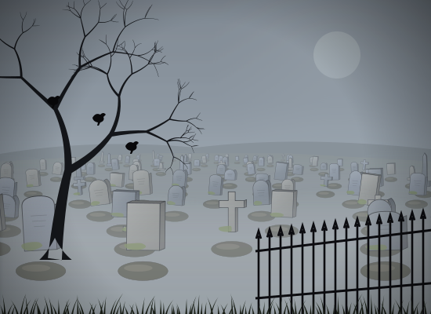
new
Mounds and headstones receding into dense fog under a veiled moon, a dead tree with crows, an iron fence; the Design Doc's 'dense fog covers the many mounds and headstones'.
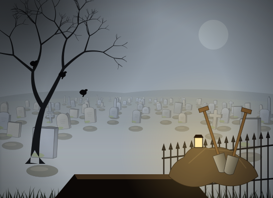
new
The same graveyard with an open grave front and centre, a heap of earth with two crossed shovels and a lantern; upper left kept plain for the power bars.
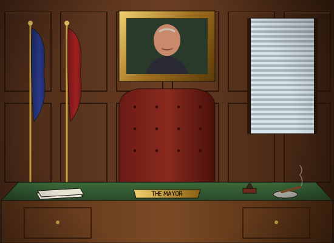
new
Panelled office: his own portrait in gilt, flags, venetian blinds, an oxblood chair centred for the Mayor's bust, a vast desk with THE MAYOR nameplate, permits, stamp and cigar.
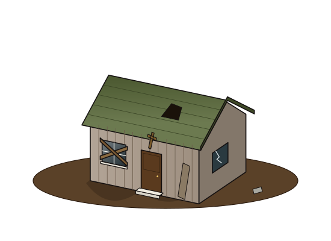
new
The Shack: weathered boards, a hole in the green roof, a boarded window and a crooked cross; dirt yard.
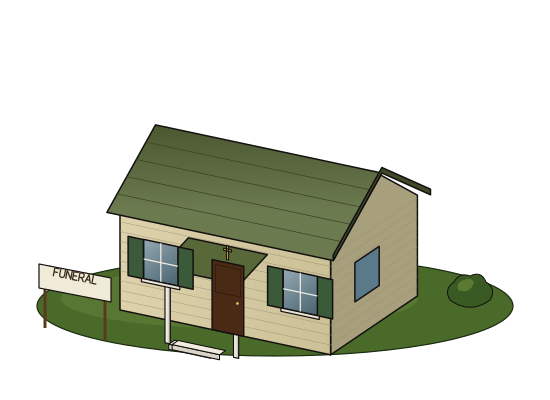
new
The Fixer-Upper: fresh cream clapboard, green shutters, a porch on two posts, a FUNERAL sign in the yard.
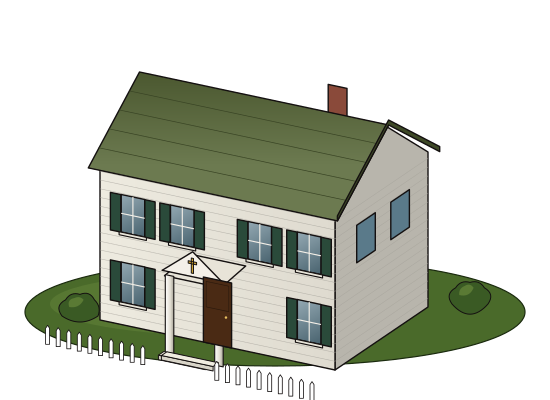
new
Respectable: two white storeys, a pedimented portico, chimney, picket fence and shrubs.
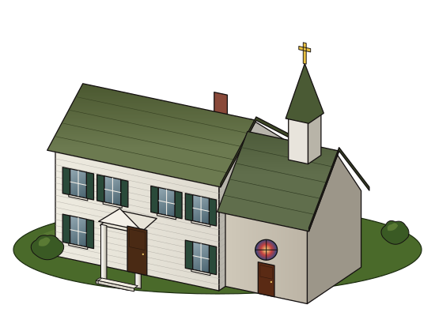
new
Chapel House: the Respectable house with a stone chapel wing, rose window and a steeple.
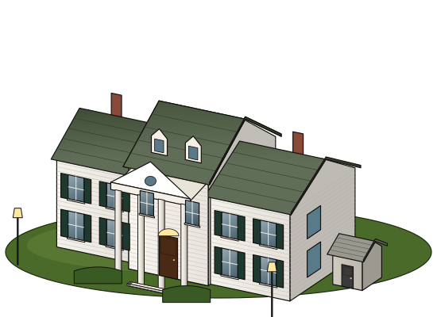
new
Colonial Mansion: two wings, a four-column portico with fanlight door, dormers, a family mausoleum and lamps.
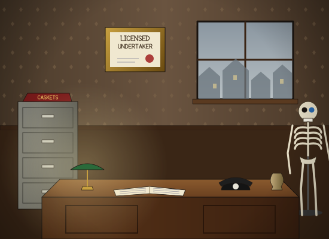
new
The undertaker's own office: licence on the wall, the fog through the window, a filing cabinet with a casket catalogue, the desk with ledger, telephone, lamp and urn, and Morty on his stand in the corner.
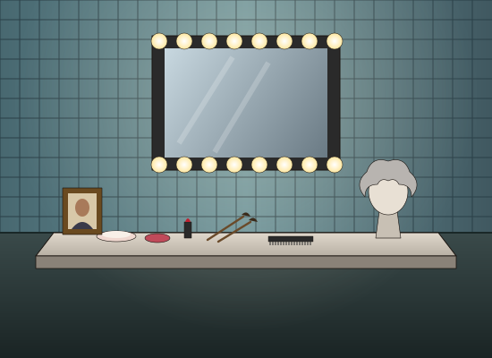
new
The make-up station: a bulb-ringed mirror, powder, rouge, lipstick, brushes, a comb, a wig on a stand and a photo of the deceased for reference.
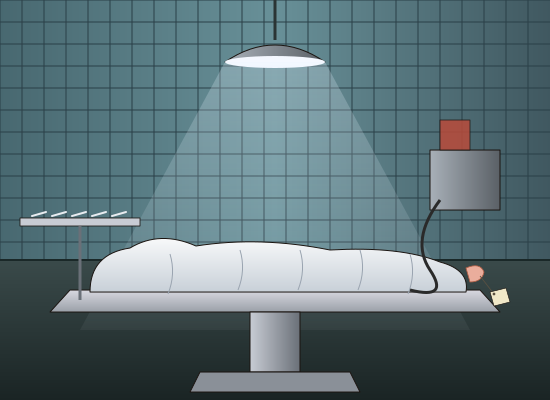
new
A body under a sheet on the steel table, a toe tag, instruments, the pump; cold tiles under the operating lamp.
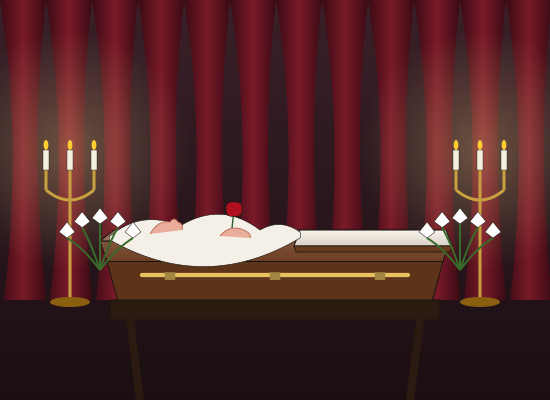
new
The open casket on its bier between candelabra, lined in satin, a nose and folded hands holding a rose, white lilies, red drapes.
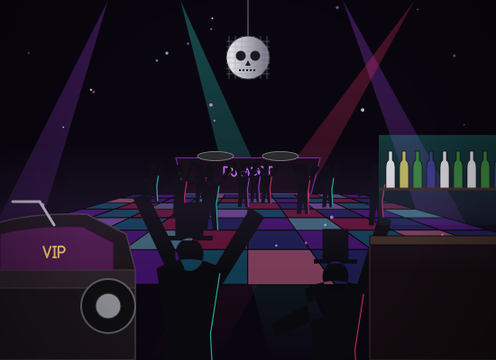
new
A rave for funeral directors: lit floor tiles, beams of purple and teal, top-hatted mourners dancing, a skull disco ball, DJ MORT's coffin booth, the VIP booth that is a hearse with the back off, a back-lit bar.
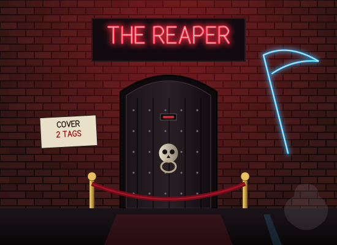
new
A black studded door with a skull knocker in a red-lit brick alley, THE REAPER in red neon, a blue neon scythe, a COVER 2 TAGS card and a velvet rope.
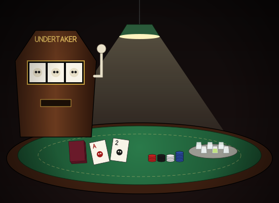
new
Green felt under a hanging lamp: an Ace and a Two of skulls, chips, six shot glasses with one green one, and a coffin-shaped slot machine with a bony arm.
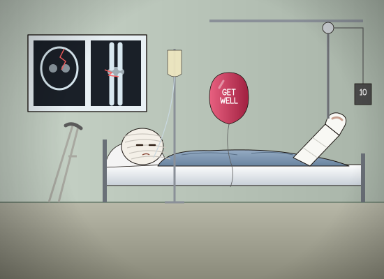
new
A patient bandaged like a parcel, one cast leg in traction (pulley and a 10 lb weight), X-rays of a cracked skull and a busted knee, crutches, a drip and a GET WELL balloon.
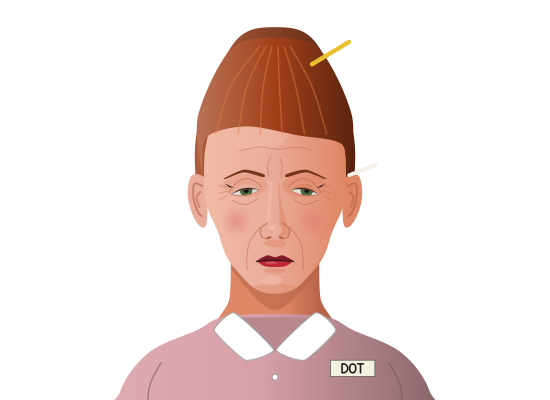
new
A diner waitress at the end of a double shift: red beehive with a pencil in it, winged liner, name tag DOT.
new
An elderly churchgoer in a purple Sunday hat with a silk flower, pearls and a lavender suit.
new
Inspector Mudge: pinched and suspicious, bowler, pince-nez, clipped moustache, clipboard.
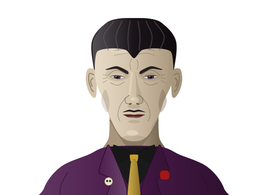
new
Lucius Vane: gaunt, slicked hair with a widow's peak, pencil moustache, plum velvet suit, skull pin and carnation.
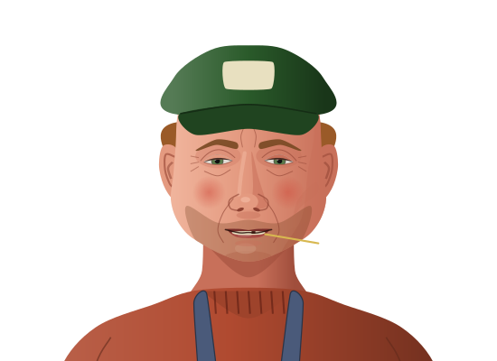
new
A sunburnt farmer in a feed cap and overalls, stubble, a gap-toothed grin, a stalk of hay.
new
A retired watchmaker with a trimmed white beard, reading glasses, cardigan and a loupe on a cord.
new
Mayor Hollis Grubb: jowly, comb-over, small pleased eyes, pinstripes and the chain of office.
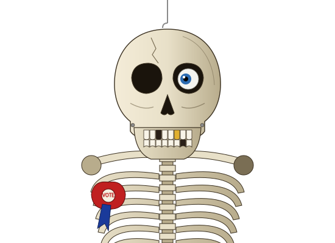
new
Morty the parlor skeleton on his hook: one glass eye, a gold tooth, a missing tooth, a wired jaw and a VOTE rosette.
new
Nurse Gertie: grey curls, nurse's cap, round glasses, cardigan over the uniform, fob watch; tired and kind. The original nurse (places/hospital_desk) is a young woman, so Gertie is new.
new
Prudence Ledbetter: tight bun, half-moon glasses on a chain, lace collar and cameo, pursed lips.
client placeholder placeholders/building-city-hall.svg
A white classical block with five columns, pediment, clock tower with a copper dome and a flag; the map icons' oblique view, black outline and shadow.
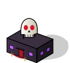
client placeholder placeholders/building-reaper-club.svg
A squat black-purple club with a red door and canopy, purple-lit windows, a big skull sign on the roof (like the cafe's bottle) and a velvet rope.
client placeholder placeholders/capsule-parlor.svg
A brass capsule disc with a black line drawing of a parlor with a cross, matching the original map, news, stats and mail buttons.
new
The clear icon (replaces the client's inline glyph in ExpandedIcons.tsx when the pack is Remastered).
new
The debt icon (replaces the client's inline glyph in ExpandedIcons.tsx when the pack is Remastered).
new
The fog icon (replaces the client's inline glyph in ExpandedIcons.tsx when the pack is Remastered).
new
The injuries icon (replaces the client's inline glyph in ExpandedIcons.tsx when the pack is Remastered).
new
The karma icon (replaces the client's inline glyph in ExpandedIcons.tsx when the pack is Remastered).
new
A brass balance: smouldering coins in the left pan, a white lily in the right.
new
The leads icon (replaces the client's inline glyph in ExpandedIcons.tsx when the pack is Remastered).
new
The mayor icon (replaces the client's inline glyph in ExpandedIcons.tsx when the pack is Remastered).
new
The money icon (replaces the client's inline glyph in ExpandedIcons.tsx when the pack is Remastered).
new
Tier 1, a tasteful granite bench.
new
Tier 2, the weeping angel (slightly cross-eyed).
new
Tier 3, a marble obelisk.
new
Tier 4, the eternal flame.
new
Tier 5, a bronze statue of yourself, pointing at something important.
new
The news icon (replaces the client's inline glyph in ExpandedIcons.tsx when the pack is Remastered).
new
The ordinance icon (replaces the client's inline glyph in ExpandedIcons.tsx when the pack is Remastered).
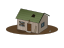
new
Shack, the office ladder's step 1: the places/parlor-1 drawing cropped.
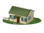
new
Fixer-Upper, the office ladder's step 2: the places/parlor-2 drawing cropped.
new
Respectable, the office ladder's step 3: the places/parlor-3 drawing cropped.
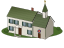
new
Chapel House, the office ladder's step 4: the places/parlor-4 drawing cropped.
new
Colonial Mansion, the office ladder's step 5: the places/parlor-5 drawing cropped.
new
The rain icon (replaces the client's inline glyph in ExpandedIcons.tsx when the pack is Remastered).
new
The rating icon (replaces the client's inline glyph in ExpandedIcons.tsx when the pack is Remastered).
new
The savings icon (replaces the client's inline glyph in ExpandedIcons.tsx when the pack is Remastered).
new
The scorcher icon (replaces the client's inline glyph in ExpandedIcons.tsx when the pack is Remastered).
new
The snow icon (replaces the client's inline glyph in ExpandedIcons.tsx when the pack is Remastered).
new
The story icon (replaces the client's inline glyph in ExpandedIcons.tsx when the pack is Remastered).
new
The thunderstorm icon (replaces the client's inline glyph in ExpandedIcons.tsx when the pack is Remastered).
new
The turns icon (replaces the client's inline glyph in ExpandedIcons.tsx when the pack is Remastered).
new
The vote icon (replaces the client's inline glyph in ExpandedIcons.tsx when the pack is Remastered).
new
The weather icon (replaces the client's inline glyph in ExpandedIcons.tsx when the pack is Remastered).